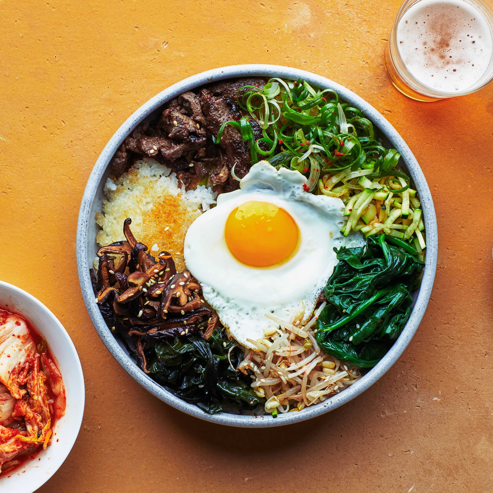

Bibimbap - Korean Mixed Rice with Meat and Vegetables

What is Bibimbap?
Bibimbap simply translates to
“mixed rice with meat and assorted vegetables“.
You can make endless variations to this dish depending
on your preference and dietary requirements (e.g. microgreens bibimbap)
and also based on the dish/bowl it is served in.
Ingredients
- Meat and Meat Sauce
- 100g/3.5 ounces beef mince
- 1 Tbsp soy sauce
- 1 Tbsp sesame oil
- 1 tsp brown sugar
- 1/4 tsp minced garlic
- Vegetable and Others
- 250g seasoned spinach
- 350g seasoned bean sprouts
- 100g shiitake
- 120g carrots
- 1/2 tsp salt
- 3 to 4 serving portions of steamed rice
- 3 or 4 eggs
- cooking oil to cook meats, veggies
- toasted seaweed, shredded
- Bibimbap Sauce
- 2 tbsp gochujang
- 1 Tbsp sesame oil
- 1Tbsp sugar
- 1 Tbsp water
- 1 Tbsp roasted sesame seeds
- 1 tsp vinegar
- 1 tsp minced garlic
Directions
- mix the beef mince with the meat sauce
listed above. Marinate the meat for about 30 mins
while you are working on other ingredients to enhance the flavour.
Add some cooking oil into a wok and cook the meat on medium high to high heat.
It takes about 3 to 5 mins to thoroughly cook it.
- Mix the bibimbap sauce ingredients in a bowl.
- Cook spinach and bean sprouts.
- Rinse, peel and julienne the carrots.
Add some cooking oil and 1/4 tsp of fine sea salt in a wok and
cook the carrots on medium high to high heat for 2 to 3 mins.
- Clean/rinse the shiitake mushrooms and thinly slice them.
Add some cooking oil and 1/4 tsp of fine sea salt in a wok
and cook the mushrooms on medium high to high heat until they are all cooked. (It takes 2 to 3 mins.)
- Make fried eggs.
- Put the rice into a bowl and add the meat,
assorted vegetables, seasoned seaweed, bibimbap sauce, and the egg on top of the rice. Serve.